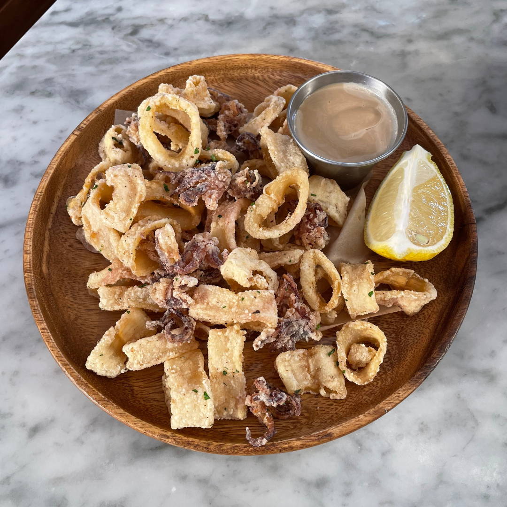
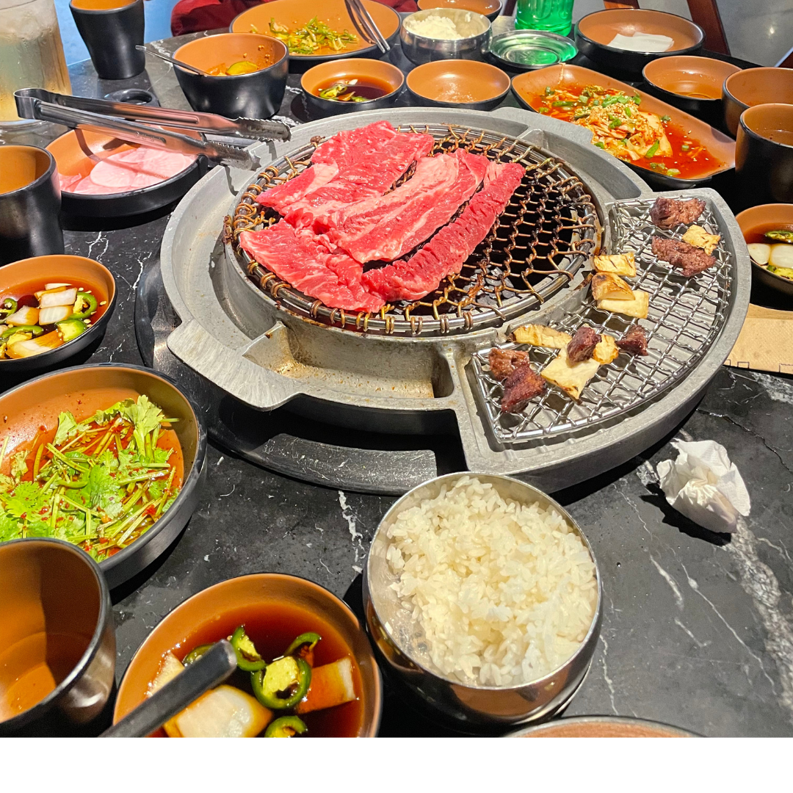
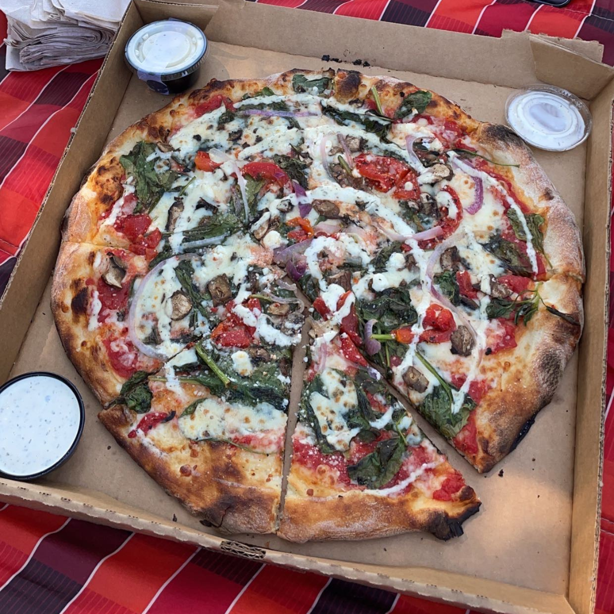
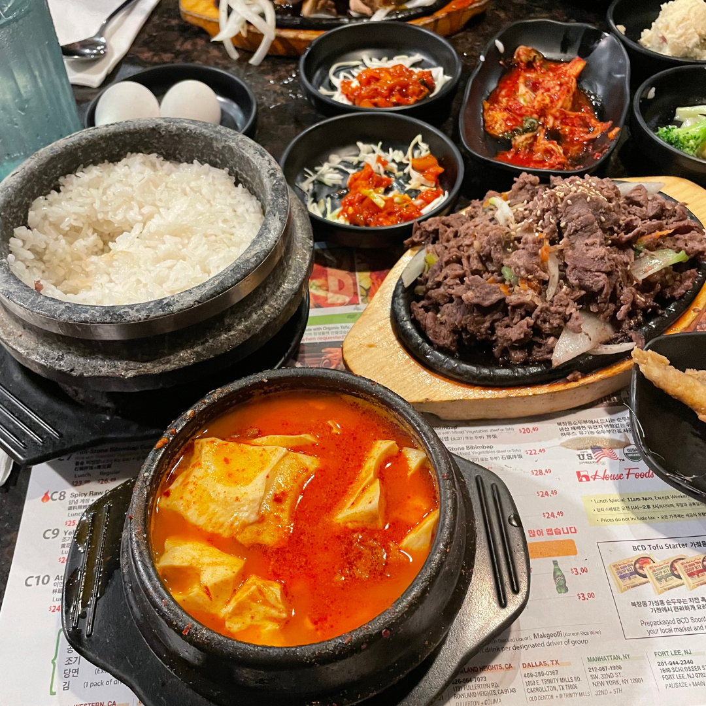
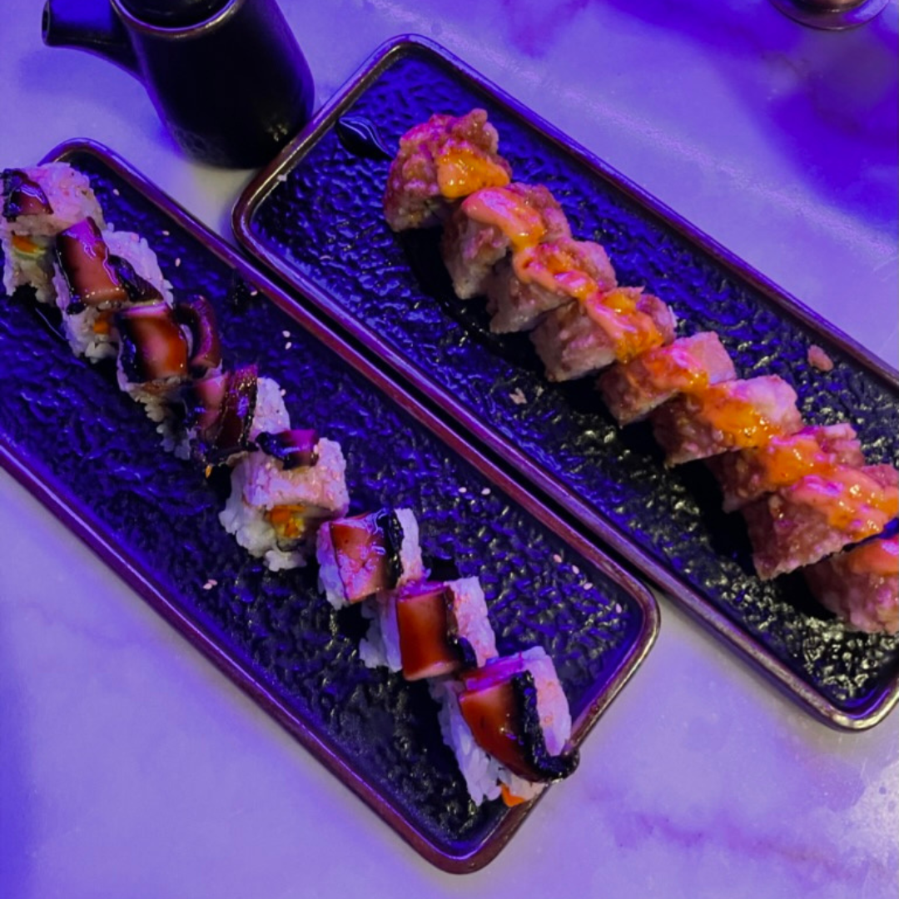

elefante
>>> / >>>>>
$$$$ / $$$$
i went here for a quick lunch in november, and the view and vibes were absolutely stunning. however, while i enjoyed the food, it's not the best food i've ever had. i'd highly recommend going during lunch though, because they have a 3 course lunch menu for just $35/person, which is much better than going during dinner or another time, since you get to try a lot of the menu items. i'd also highly recommend the eggplant dip! it comes with naan and is so light and delicious.

m korean bbq
>>>> / >>>>>
$$$ / $$$$
unlike most of the kbbq places i've tried here in LA, this place has no all you can eat options, but it's still worth every penny! the service is incredible and they help you grill all the meats, and me and my friends left very full and happy. they will bring out as many sides as you ask for and their steamed egg was just absolutely delicious. it's located in the source OC, so it's perfect if you're looking to do some shopping either before or after enjoying a meal!

spin! pizza
>>>> / >>>>>
$$ / $$$$
spin! is one of my favorites from my hometown in kansas, and i'm sad to see that it's not in lots of other places because their pizza (and ranch) is phenomenal. it's one of my favorite date night meals, because it's convenient, delicious, and has so many different options. my favorite order is the veggie pizza with a ranch swirl AND a side of ranch! comes with so many delicious veggies and their ranch is (i'll say it again) absolutely delicious

bcd tofu house
>>>>> / >>>>>
$$$ / $$$$
i've heard so many amazing things about BCD, and when i went to try it for the first time, i'm happy to report that it did not disappoint at all. i got the classic bulgogi, with the soup, and they were both delicious, along with the hot stone rice. they gave us so many sides that i couldn't decide which one to try first, and their takeout containers (for taking home leftovers) were honestly awesome and made the experience at home even more magical after i'd finished eating there.

bang bang
>>> / >>>>>
$$$ / $$$$
i booked a reservation here for a dinner date (not realizing that this was both a sushi place and a nightclub) but the ambiance was actually a lot nicer than i expected it to be. the rolls were also amazing, but the appetizers were just alright. we were seated on a couch, which i've never experiences in a restaurant, but it was very cozy and the lighting was good. the rolls, i felt, were a bit overpriced, but i don't have anything in specific to critique.